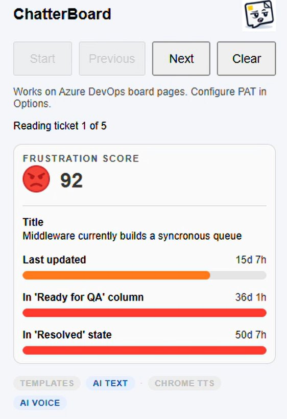

ChatterBoard
What if tickets could speak?
ChatterBoard gives your Azure DevOps tickets a voice. At stand-up, it finds the cards that have sat still too long, scrolls each one into view, highlights it and reads it out loud. The stuck work speaks first, before anyone starts reading out status updates.
- Free and open source
- Azure DevOps
- Chrome
- Works out of the box with Chrome's voice
At stand-up

- Start
- Scores the tickets on the board, queues the ones that most need attention, and starts reading them out, one at a time. Each card is scrolled into view and highlighted while it speaks.
- Previous and Next
- Move through the queue at the team's pace, to go back to a ticket or skip to the next one.
- Clear
- Stops and resets.
- Frustration score
- Shows why the ticket was picked: its score, and how long it has waited on each signal.
- Mode pills
- Switch between template and AI-written words, and between Chrome's voice and ElevenLabs, without opening Options.
How it picks the tickets
Each ticket gets a frustration score from 0 to 100.
Time since last updated
How long since anyone changed anything on the ticket.
Nobody has touched me for 23 days. Starting to feel a bit neglected here.
Time in column
How long the ticket has sat in its current board column, read from its history. The column is named when it speaks.
I've been stuck in Ready for QA for 46 days. This is beyond a joke.
Time in state
How long since the ticket's state last changed, for example how long it has been Active or Resolved.
Been in progress for 33 days. This is taking longer than expected.
- Only what's on screen. It looks at the tickets visible on the board, and skips the first and last columns: work not started yet, and work that's done.
- Relative or absolute. Relative scoring compares every wait with the longest one on the board, so the worst ticket today always scores near 100. Absolute scoring compares each wait with a fixed number of days (30 by default), so a calm board stays calm.
- One score per ticket. The frustration score is the average of its signal scores. Tickets are queued from the highest score down, five by default.
- Only the signals that matter. A signal scoring under half of the ticket's strongest signal is not mentioned, so one clear problem isn't drowned out by two small ones.
- Skip what you choose. Tags, states and work item types you list in Options are ignored.
It's been 4 days since anyone looked at me. No rush though.
11 days without an update. Am I invisible or something?
Nobody has touched me for 23 days. This is completely unacceptable.
Words and voices
Switch either one from the popup's mode pills, mid-stand-up if you like.
The default. Thirty hand-written sentences, ten per signal, from patient to fed up. No API key needed.
A fresh one or two sentences per ticket from OpenAI's GPT-4o-mini, written in the right tone. Falls back to the templates if OpenAI isn't available.
The default. Chrome's built-in voices, nothing to set up.
Realistic ElevenLabs voices. Each ticket gets its own voice, picked from its ID, so the board sounds like a crowd. Or pin one voice in Options.
Bring your own key
ChatterBoard uses your own Azure DevOps token, plus your own OpenAI or ElevenLabs keys if you want AI words or voices. They stay in your browser. There's no ChatterBoard server and nothing to sign up for.
Install steps, options, questions or a bug: it's all on GitHub. Want to talk about how your team runs stand-up and gets work flowing?